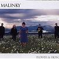

Celtic Lyrics Corner > Artists & Groups > Malinky > Flower & Iron > When Margaret Was Eleven
|  | When Margaret Was Eleven |
| Credits : | Pete St. John |
| Appears On : | Flower & Iron |
| Language : | English |
Lyrics :
My father sailed away, the band played tunes of glory
A giant man with ribbons, bedeviled dignity
A regimental sergeant, the backbone of the Empire
For God and righteous glory bound for High Germany
Chorus
:
Sweet Lord, I was just seven when Margaret was eleven
They served us war for breakfast and soldiers' songs for tea
"Your father's gone campaigning" was a way of not explaining
That soldiers are the living proof of our inhumanity
My childhood passed away midst the tales and lurid stories
Of manufactured glories and inhuman gallantry
I asked, "When is war over?", but no one deemed to answer me
And Margaret played that dreaded tune called High Germany
(Chorus)
My father made it home, but he came without his reason
Two eyes of molten madness, a senseless fool of war
"He's just a child," my mother cried, "to be dressed in full regalia
And paraded as a hero home from High Germany"
(Chorus 2x)
There'll be no tunes of glory for Margaret and me